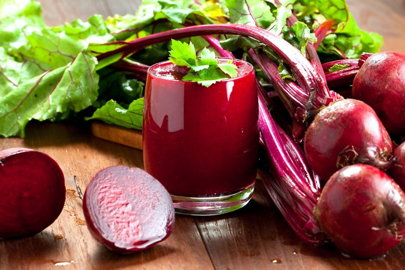

Beetroot Juice for Food Dye
Beetroot Juice for Food Dye
This post is all about me sharing with you a kitchen shortcut. There are many fascinating tidbits that I could share about beets. But I am going to do my best to stay focused here today. :)

There have been many times in those recipe creating moments when I have needed a red food coloring. I won’t use the typical #40 red food dye that you find on your local grocery shelves, and to be honest, the natural food dyes… well, I find that they lack the luster and vibrancy that I like. I know that beetroot juice is a wonderful and natural dye… I have a stain on my chef’s coat that always reminds me of that. hehe
But here is one issue that I always come up against… I never seem to have any fresh beets on hand when inspiration hits me. And an 18 mile round trip to the grocery store is a sure bet inspiration killer. Beet powder is always an option, especially when you don’t want to add additional liquid to a recipe, but even that can be hard to find.
So, I decided to juice some beets and freeze the juice in 1/4 cup portions. Within my collection of mason jars, I fell in love with my itty-bitty 4 0z jars. They hold 1/4 cup of juice beautifully! And yes, that sentence does require an exclamation point… because I find this downright exciting… don’t you? :) Of course, you can freeze it in any increment you want. Ice cube trays work perfectly as well.
Please note that the number of beets needed to create a specific volume will always vary. It will depend on the freshness and quality of the beets. So, please use the amounts given as a guideline. So, when the time comes, the inspiration bug hits, and you find yourself in dire need of red food dye… pull a jar of juice from the freeze, allow it to thaw, and surrender to the creative gods of raw!
Now is when I typically would go on and on as to how healthy beets can be for us, but I promised to stay focused. So for more reading enjoyment, you can check this site out. A nutritious food dye… gotta love that. If you scroll down towards the end of this post, I shared some information I found about what they see in studies about food dyes. Scary.
2 cups
- 2-3 lbs of red beets roots
Preparation:
- For beet juice as a food dye, I juiced only the root, not the stem or leaves. These do add high nutrients to the juice if you want to create a drink, though.
- Trim the stem from the beetroots and give them a good scrubbing under running water.
Juicer method:
- Roughly chop the beets according to the chute size that your juicer has and juice accordingly.
- Pour into safe freezer jars or in an ice-cube tray and place in the freezer.
Blender method:
- Rough chop the clean beets and place them in the blender. I recommend only filling the container up halfway.
- Add roughly 1/4 cup of water and blend until the beets are completely broken down and in liquid form.
- Pour the juice into a nut bag and squeeze the juice from the bag into a large bowl. The pulp can be saved for cracker making if you wish. Otherwise, place it in the compost.
- Note – Beet juice stains!
Artificial Food Dye Dangers
- Red 2 – carcinogenic; increases bladder tumor risk; found on Florida oranges.
- Red 3 – thyroid carcinogen; banned from external use products; found in maraschino cherries, sausage, and candy, among others.
- Red 40 – most common food dye; linked to allergies and ADHD in children; found in candy, cereal, desserts, drugs, and cosmetics, among others.
- Yellow 5 – currently undergoing testing, linked to behavioral problems in children; found in beverages, candy, cereal, gelatin, pharmaceuticals, and cosmetics, among others.
- Yellow 6 – currently undergoing testing; suspected of causing adrenal tumors and hypersensitivity; found in baked goods, cereal, candy, gelatin, and cosmetics, among others.
- Blue 1 – currently undergoing testing; suspected of causing kidney tumors; found in beverages, candy, cereal, and pharmaceuticals.
- Blue 2 – currently undergoing testing; suspected of increasing tumor risk – especially of the brain; found in beverages, candy, pet food, and pharmaceuticals.
- Green 3 – currently undergoing testing; suspected of causing tumors of the bladder and testes; found in personal care products, ice cream, beverages, lipstick, and other cosmetics.
- (source)
© AmieSue.com